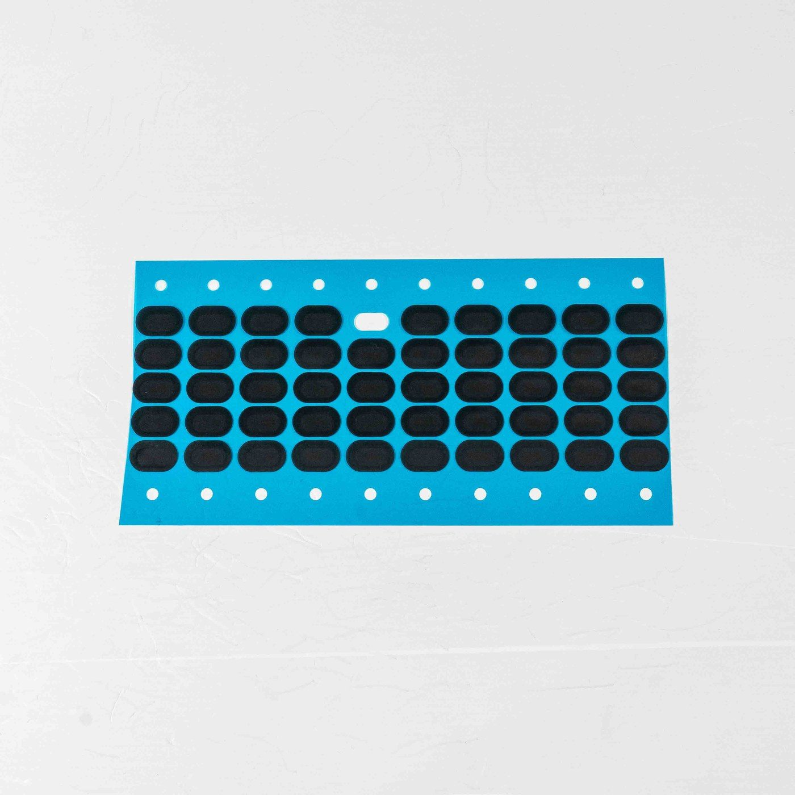

05
密封与防护
防水、防尘、防跌：密封圈、O 形圈、点胶、CIPG、透气膜、缓冲结构。 本类共 11 篇。
防水透气膜 3 篇

GORE 防水透气膜：压力平衡与粘贴式透气阀的安装参数
密封外壳在升温、降温、海拔变化或突然淋雨时，内外会产生压差，长期把密封圈「憋坏」；在壳上开几个 1 mm 小孔，从内侧贴一片 ePTFE 透气膜，就能让空气和水汽双向通过、液态水和粉尘进不来，而且不像蘑菇阀那样需要开启压力。Gore 数据表给出了透气量、厚度、定位环尺寸和压贴参数（约 2 bar、> 5 s、固化 24 h）。

三防手机整机防水结构：上下壳胶圈、电池盖、按键与开孔的参数清单
一篇把三防手机每个漏水口都配了「怎么封 + 封多少」的经验清单：上下壳用 W1.5×H1 mm、约 45° 的正压胶圈，配 W0.5×H0.3 mm 干涉凸台（过盈 0.3 mm）、螺丝间距约 35 mm；电池盖侧压 φ1.5 mm 圈过盈 0.2 mm；侧键单边过盈 0.15–0.3 mm；TP 贴胶宽 ≥ 2.5 mm；喇叭贴防水膜，高防水机必须留透气泄压孔。

苹果 iPhone 7 首代 IP67：逐个开口封堵与气压平衡阀
iPhone 7 是 iPhone 第一代 IP67（1 m、30 min）。iFixit 拆了两台，发现苹果的做法不是某一个新技术，而是把每个开口都单独处理：屏幕周边换成更强的胶条，音量键各有两个小密封圈并用 C 形卡簧固定，SIM 卡托和顶针孔各加一圈橡胶，喇叭导管压在橡胶垫上并加细网，Lightning 接口用整圈橡胶垫，Home 键改成没有活动件的固态键、取消耳机孔——再用一个塑料「气压平衡挡板」让密封机身内外气压一致，保证气压计准确。
点胶/胶粘密封 4 篇
GORE 防水透气膜：压力平衡与粘贴式透气阀的安装参数
密封外壳在升温、降温、海拔变化或突然淋雨时，内外会产生压差，长期把密封圈「憋坏」；在壳上开几个 1 mm 小孔，从内侧贴一片 ePTFE 透气膜，就能让空气和水汽双向通过、液态水和粉尘进不来，而且不像蘑菇阀那样需要开启压力。Gore 数据表给出了透气量、厚度、定位环尺寸和压贴参数（约 2 bar、> 5 s、固化 24 h）。

GoPro Hero4 Session 免外壳防水机身
GoPro 第一款不用外壳就防水的相机：镜头盖用 8 颗 T4 螺丝压 O 形圈（可换），机身则是「透明塑料方壳 + 胶粘橡胶外套」整体密封——防水做到了，但内部只能破坏性拆开，可维修性 1/10。
三防手机整机防水结构：上下壳胶圈、电池盖、按键与开孔的参数清单
一篇把三防手机每个漏水口都配了「怎么封 + 封多少」的经验清单：上下壳用 W1.5×H1 mm、约 45° 的正压胶圈，配 W0.5×H0.3 mm 干涉凸台（过盈 0.3 mm）、螺丝间距约 35 mm；电池盖侧压 φ1.5 mm 圈过盈 0.2 mm；侧键单边过盈 0.15–0.3 mm；TP 贴胶宽 ≥ 2.5 mm；喇叭贴防水膜，高防水机必须留透气泄压孔。
苹果 iPhone 7 首代 IP67：逐个开口封堵与气压平衡阀
iPhone 7 是 iPhone 第一代 IP67（1 m、30 min）。iFixit 拆了两台，发现苹果的做法不是某一个新技术，而是把每个开口都单独处理：屏幕周边换成更强的胶条，音量键各有两个小密封圈并用 C 形卡簧固定，SIM 卡托和顶针孔各加一圈橡胶，喇叭导管压在橡胶垫上并加细网，Lightning 接口用整圈橡胶垫，Home 键改成没有活动件的固态键、取消耳机孔——再用一个塑料「气压平衡挡板」让密封机身内外气压一致，保证气压计准确。
密封圈/密封槽 4 篇

Garmin fēnix 7X 可复用橡胶密封圈
fēnix 7X 的屏幕总成和后盖都用 T4 Torx 螺丝压紧橡胶密封圈来防水，而不是一次性胶粘——正确装回密封圈理论上可以保持防水，是「可维修的防水设计」范例。

O 形圈密封槽设计：填充率、压缩率与挤出间隙的五个数
O 圈漏不漏，主要不看胶料，而看沟槽的几个数：填充率（静 ≤ 80%、动 ≤ 70%）、压缩率（一般 12%–30%，要用 O 圈最小/最大截面各算一遍）、挤出间隙（按最大实际间隙算，压力越高间隙要越小）、线速度、介质 + 温度。三家来源给的区间基本一致：Parker 手册建议填充 60%–85%、最佳 75%，静密封最大压缩 30%，绝对压缩量不少于 0.007 in（约 0.2 mm）。
三防手机整机防水结构：上下壳胶圈、电池盖、按键与开孔的参数清单
一篇把三防手机每个漏水口都配了「怎么封 + 封多少」的经验清单：上下壳用 W1.5×H1 mm、约 45° 的正压胶圈，配 W0.5×H0.3 mm 干涉凸台（过盈 0.3 mm）、螺丝间距约 35 mm；电池盖侧压 φ1.5 mm 圈过盈 0.2 mm；侧键单边过盈 0.15–0.3 mm；TP 贴胶宽 ≥ 2.5 mm；喇叭贴防水膜，高防水机必须留透气泄压孔。
苹果 iPhone 7 首代 IP67：逐个开口封堵与气压平衡阀
iPhone 7 是 iPhone 第一代 IP67（1 m、30 min）。iFixit 拆了两台，发现苹果的做法不是某一个新技术，而是把每个开口都单独处理：屏幕周边换成更强的胶条，音量键各有两个小密封圈并用 C 形卡簧固定，SIM 卡托和顶针孔各加一圈橡胶，喇叭导管压在橡胶垫上并加细网，Lightning 接口用整圈橡胶垫，Home 键改成没有活动件的固态键、取消耳机孔——再用一个塑料「气压平衡挡板」让密封机身内外气压一致，保证气压计准确。
可维修防水 1 篇
O 形圈 3 篇
GoPro Hero4 Session 免外壳防水机身
GoPro 第一款不用外壳就防水的相机：镜头盖用 8 颗 T4 螺丝压 O 形圈（可换），机身则是「透明塑料方壳 + 胶粘橡胶外套」整体密封——防水做到了，但内部只能破坏性拆开，可维修性 1/10。
O 形圈密封槽设计：填充率、压缩率与挤出间隙的五个数
O 圈漏不漏，主要不看胶料，而看沟槽的几个数：填充率（静 ≤ 80%、动 ≤ 70%）、压缩率（一般 12%–30%，要用 O 圈最小/最大截面各算一遍）、挤出间隙（按最大实际间隙算，压力越高间隙要越小）、线速度、介质 + 温度。三家来源给的区间基本一致：Parker 手册建议填充 60%–85%、最佳 75%，静密封最大压缩 30%，绝对压缩量不少于 0.007 in（约 0.2 mm）。
三防手机整机防水结构：上下壳胶圈、电池盖、按键与开孔的参数清单
一篇把三防手机每个漏水口都配了「怎么封 + 封多少」的经验清单：上下壳用 W1.5×H1 mm、约 45° 的正压胶圈，配 W0.5×H0.3 mm 干涉凸台（过盈 0.3 mm）、螺丝间距约 35 mm；电池盖侧压 φ1.5 mm 圈过盈 0.2 mm；侧键单边过盈 0.15–0.3 mm；TP 贴胶宽 ≥ 2.5 mm；喇叭贴防水膜，高防水机必须留透气泄压孔。
包胶外壳 3 篇
GoPro Hero4 Session 免外壳防水机身
GoPro 第一款不用外壳就防水的相机：镜头盖用 8 颗 T4 螺丝压 O 形圈（可换），机身则是「透明塑料方壳 + 胶粘橡胶外套」整体密封——防水做到了，但内部只能破坏性拆开，可维修性 1/10。

TPU 包胶气囊角：拐角外凸空腔缓冲跌落冲击
保护壳四边可以贴住电子产品侧壁，但在水平段与垂直段相接的拐角向外做出弧形凸起，使拐角内壁与产品角部之间留出空腔，形成「气囊角」；跌落时通常四角先着地，TPU 弧形部先弹性变形，空腔再参与缓冲。专利只给出结构，不给出硬度或边框厚度；若采用硬胶+TPU 包胶，还要单独验证粘接。
三防手机整机防水结构：上下壳胶圈、电池盖、按键与开孔的参数清单
一篇把三防手机每个漏水口都配了「怎么封 + 封多少」的经验清单：上下壳用 W1.5×H1 mm、约 45° 的正压胶圈，配 W0.5×H0.3 mm 干涉凸台（过盈 0.3 mm）、螺丝间距约 35 mm；电池盖侧压 φ1.5 mm 圈过盈 0.2 mm；侧键单边过盈 0.15–0.3 mm；TP 贴胶宽 ≥ 2.5 mm；喇叭贴防水膜，高防水机必须留透气泄压孔。
跌落缓冲 3 篇
TPU 包胶气囊角：拐角外凸空腔缓冲跌落冲击
保护壳四边可以贴住电子产品侧壁，但在水平段与垂直段相接的拐角向外做出弧形凸起，使拐角内壁与产品角部之间留出空腔，形成「气囊角」；跌落时通常四角先着地，TPU 弧形部先弹性变形，空腔再参与缓冲。专利只给出结构，不给出硬度或边框厚度；若采用硬胶+TPU 包胶，还要单独验证粘接。

安全帽 EPS 与 EPP 缓冲内衬：珠粒模压与硬壳堆叠
头盔的缓冲内衬多由 EPS 或 EPP 珠粒在专用模具里用蒸汽、热和压力熔接而成，再与硬壳、适佩和束缚系统堆叠成整盔。EPS 更常靠一次性压溃吸能，EPP 回弹更好、可在一定冲击后恢复；谁更安全不取决于材料名称，而取决于密度、厚度、几何和整盔认证。
跌落测试结构加固：六面四角、外圆角与局部 TPU 缓冲
消费电子跌落测试通常按「六面四角」十个方向做自由落体；角和棱先着地，应力沿棱传入壳体。结构上优先把外观直角改成更大外圆角、在大平面内侧加网格筋，并在电池仓、镜头等「金贵部位」预留 TPU 软胶包边或垫片吸收冲击，而不是把壁厚一律加厚。
现场成型密封(CIPG) 1 篇

排线防水胶圈 1 篇
防尘结构 2 篇

喇叭防尘网与防水透声膜叠层：声学孔与结构孔不要混用
麦克风或扬声器开孔上的防护通常不是一层网：最外层用防尘/防风网打散气流、挡大颗粒，内侧再贴防水透声膜挡水并让声音通过。这和外壳上只做压力平衡的防水透气膜不是同一种东西——声学孔看插损和耐水压，结构孔看压差平衡；两类开孔不要共用一张膜。
苹果 iPhone 7 首代 IP67：逐个开口封堵与气压平衡阀
iPhone 7 是 iPhone 第一代 IP67（1 m、30 min）。iFixit 拆了两台，发现苹果的做法不是某一个新技术，而是把每个开口都单独处理：屏幕周边换成更强的胶条，音量键各有两个小密封圈并用 C 形卡簧固定，SIM 卡托和顶针孔各加一圈橡胶，喇叭导管压在橡胶垫上并加细网，Lightning 接口用整圈橡胶垫，Home 键改成没有活动件的固态键、取消耳机孔——再用一个塑料「气压平衡挡板」让密封机身内外气压一致，保证气压计准确。